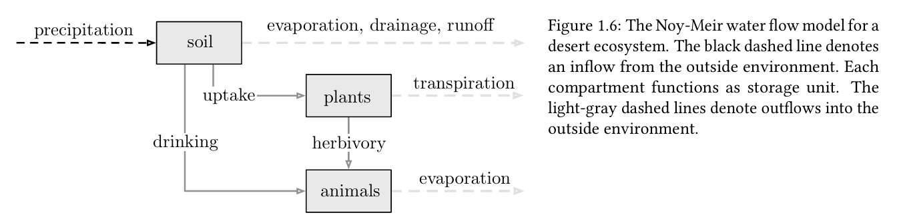

这本书从数学的角度介绍了多智能体动态系统。包括基于代数图论的分析方法及其在工程设计问题中的应用。重点探讨互连网络系统中的基本动态现象，如：平均系统中的共识与分歧，分室流网络中的稳定平衡点，耦合振荡器与网络控制系统中的同步。
Lectures On Network Systems Chapter 1 Notes #
Motivating Problems #
我们先从一些简单的实例入手
社会影响力网络的观点动力学 #
一组n个人，每个人都对某个参数的未知值有一个估计值\(p_i\) (pdf, probality density function)。现在每个个体i获知群体中其他成员j的概率密度函数 \(p_j (j \not = i )\).根据French Jr提出的模型预测，个体会把他的pdf修改为
$$ p_i^+ = \sum_{j=1}^{n}a_{ij}p_j \tag{1} $$其中\(a_{ij}\)表示个体i在修正意见时赋予个体j的概率密度函数权重，也就是个体i赋予个体j的人际影响权重。而\(a_{ii}\)表示个体i对自己观点坚持程度。
上面的方程也就是French-Harary-DeGroot观点动力学方程。在这个矩阵当中，满足\(a_{ij} \ge 0,\sum_{j=1}^na_{ij}=1\),for all i。这类矩阵被称为行随机矩阵。
$$ A = \begin{bmatrix} a_{11} & \cdots & a_{1n} \\ \vdots & \ddots & \vdots \\ a_{n1} & \cdots & a_{nn} \end{bmatrix} $$对于这么一个建模，需要关注的是如何测量系数，个概率密度函数何时会收敛到同一个函数（即智能体达成共识），最终能收敛到哪一个概率密度函数。
无线传感器网络中的平均算法 #
无线传感器网络是空间上分布式的传感器集群。每个传感器执行本地计算，并向临近设备传递信息，进而传遍整个网络。
假设一个节点测量了某个参数\(x_i\)，考虑以下基于线性平均概念的简单分布式算法，每个节点重复执行：
$$ x_i^+:=average(x_i,\{x_j, for\space all\space neighbor\space nodes\space j\}) \tag{2} $$对于下面这样一个图，显然新的x值获得遵循以下过程：
$$ x^+ = \begin{bmatrix} 1/2 & 1/2 & 0 & 0 \\ 1/4 & 1/4 & 1/4 & 1/4 \\ 0 & 1/3 & 1/3 & 1/3\\ 0 & 1/3 & 1/3 & 1/3 \end{bmatrix}x = A_{wsn}x $$这里的矩阵\(A_{wsn}\)显然也是行随机矩阵。
graph TD
1 --- 2
2 --- 3
2 --- 4
3 --- 4
显然，这里的平均系统也是可以定义成动态系统
$$ x(k+1) = Ax(k) $$动物集群行为动力学 #
动物的集群行为也可以建模为由去中心化交互所产生的结果。一个简单的对其规则，每个动物朝向其邻居的平均运动方向进行引导。
$$ \frac{d\theta_i}{dt} = \begin{cases} \theta_j - \theta_i & \text{如果第i个动物有1个邻居j} \\ \frac{1}{2}[(\theta_{j1} - \theta_i) + (\theta_{j2} - \theta_i)] & \text{如果第i个动物有2个邻居j1, j2} \\ \frac{1}{m}\sum_{k=1}^m (\theta_{jk} - \theta_i) & \text{如果第i个动物有m个邻居} \end{cases} = \underset{j\in\text{邻居}(i)}{\text{平均}}(\theta_j - \theta_i) \quad (1.4) $$这里需要定义一个新的矩阵，拉普拉斯矩阵：
$$ L = diag(A1_n)-A $$这样，对齐规则（也就是交互定律）可以写成连续时间平均系统：
$$ \dot{\theta} = \frac{d\theta}{dt}=(A-I_n)\theta = -L\theta $$这个动态系统通常被成为拉普拉斯流
一个简单的例子，假设交互关系如下：
- 鸟1 ↔ 鸟2
- 鸟2 ↔ 鸟1,3,4
- 鸟3 ↔ 鸟2,4
- 鸟4 ↔ 鸟2,3
对应的行随机权重矩阵 $A$（每行和为1）：
$$ A = \begin{bmatrix} 0 & 1 & 0 & 0 \\ 1/3 & 0 & 1/3 & 1/3 \\ 0 & 1/2 & 0 & 1/2 \\ 0 & 1/2 & 1/2 & 0 \end{bmatrix} $$度矩阵 $D = \text{diag}(A\mathbf{1}_n)$ 是对角矩阵，记录每个节点的"影响力总和"：
$$ D = \begin{bmatrix} 1 & 0 & 0 & 0 \\ 0 & 1 & 0 & 0 \\ 0 & 0 & 1 & 0 \\ 0 & 0 & 0 & 1 \end{bmatrix} $$拉普拉斯矩阵：
$$ L = D - A = \begin{bmatrix} 1 & -1 & 0 & 0 \\ -1/3 & 1 & -1/3 & -1/3 \\ 0 & -1/2 & 1 & -1/2 \\ 0 & -1/2 & -1/2 & 1 \end{bmatrix} $$动态流动系统 #
动态流动系统，也叫做分隔系统（强调把整体划分为若干独立的部分或隔间，研究或控制不同部分），对由守恒定律以及在分隔单元之间的物质流动所表现的动力学过程进行建模。例如，电力，能源，水网，数据路由与通信网络，交通网络等。包括离散和连续的动态流系统。

离散时间模型 #
对于n个分隔单元，令
- \(q_i(k)\) k时刻分隔单元i具有的商品数
- \(a_{ij}\)路由分数，一个时间步内，从i流向j的商品比例，进而可以构建路由矩阵\(A\in R^{n\times n}_{\ge 0}\)
- \(u_{i}\ge 0\)表示流入i的非负供给量
任意时刻k，i中的商品要么全部流出，要么还有剩余，因此路由矩阵A的行满足\(\sum_{j=1}^na_{ij}\le 1\)
从这里可以看到和上面的区别了。一般具有外流的开放系统中，路由矩阵A是行次随机的，即A的元素非负，且至少有一行元素和严格小于1。而在没有外流的封闭系统中，路由矩阵是行随机的，也就是之前讨论的系统。
那么对于这样一个离散时间动态流系统，可以表示为
$$ q_i(k+1)=\sum^n_{j=1}a_{ji}q_j{k}+u_i \leftrightarrow q(k+1)=A^Tq(k)+u $$那么就可以写出water flow model的路由矩阵
$$ A_{Noy-Meir} = \begin{bmatrix} 1-a_{e-d-r}-a_{uptk}-a_{drnk} & a_{uptk} & a_{drnk} \\ 0 & 1-a_{trnsp}-a_{herb} & a_{herb} \\ 0 & 0 & 1-a_{evap} \end{bmatrix} $$显然对于这样一个系统来说，它仍然是半群，但一定不是幺半群，和之前的区别在于，行随机矩阵对应的系统是守恒系统，而行次随机矩阵对应的是耗散系统。
连续时间模型 #
对于n个分隔单元，令
- \(q_i(t)\) 连续时间t分隔单元i具有的商品数
- \(f_{ij}\)从i流向j的商品流率
- \(u_{i}\ge 0\)表示流入i的非负供给量
也就是说，在时间t，从i流向j的商品流量为\(f_{ij}q_i(t)\)，因此可以得到连续时间动态流动系统：
$$ \dot{q}_i(t) = \sum^n_{j=1,j\not ={i}}(f_{ji}q_j(t)-f_{ij}q_i(t))-f_{0,i}q_i(t)+u_i $$这里\(f_{0i}\)表示i流出系统的外流率。同理，这样就可以得到一个流率矩阵F，对角线元素全部为0。进而可以定义拉普拉斯矩阵\(L=diag(F1_n)-F\)，并且可以得到\(\sum^n_{j=1,j\not = i}(f_{ji}q_j-f_{ij}q_i)=(-L^Tq)_i\)，这样，连续时间动态流动系统可以写成
$$ \dot{q}(t)=Cq(t)+u $$其中，分隔矩阵C被定义为\(C=-L^T-diag(f_0)\)，这里的\(diag(f_0)\)是一个等于外流率的对角矩阵。矩阵C的非对角元素是非负的，因此它是一个所谓的 Metzler 矩阵。此外，矩阵C的列和为非正，这一性质在理解其特性时将发挥重要作用。
到这里，我们可以把两种系统的表示列出来
离散模型：
$$ q(k+1) = A^Tq(k)+u(k) $$连续模型：
$$ \dot{q}(t)=(-L^T-diag(f_0))q(t)+u(t) $$离散模型和连续模型有本质上的不同。离散模型使用转移矩阵，描述跳跃，即下一时刻在哪里。时间步隐含在模型中。而连续模型使用拉普拉斯矩阵，描述瞬时变化率，描述此刻向何方向移动。
看到这个让我想到了马尔可夫过程。在数学结构是高度相似的，不过此模型是用来描述多个个体，而马尔可夫链则是描述单个系统的多个状态。不过它们底层的原理是相同的。更进一步来说，这两个体系都是行随机矩阵构成的半群作用于一个初始状态上形成的轨迹。半群的不可逆性正好反应了现实，社会影响过程通常单向扩散，无法撤销。这个过程和马尔可夫过程在数学上是同构的，共享算子半群原理，更准确地说是不可约行随机矩阵生成的半群。不可约 ⇔ 强连通：从任意节点 i 出发，通过有向路径可以到达任意其他节点 j 。它是确保集体智能涌现的最弱拓扑条件——没有它，系统必然分裂。
| 表示空间 | 作用对象 | 物理现象 | 算子解释 |
|---|---|---|---|
| 概率单纯形 \(\Delta^{n-1}\) | 概率分布 \(\pi\) | 马尔可夫链 | 转移半群 \(\pi(k) = \pi(0)P^k\) |
| 物理状态空间 \(\mathbb{R}^n\) | 物理场 \(\theta\) | 扩散/共识 | 扩散半群 \(\theta(t) = e^{-Lt}\theta(0)\) |
| 观点空间 \(\mathcal{P}^n\) | 观点向量 \(p\) | 社会学习 | 平均半群 \(p(k) = A^k p(0)\) |